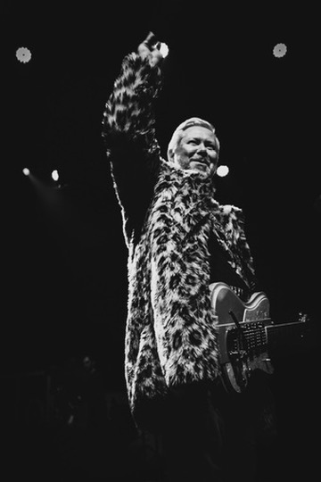

Paris, France
The Band
Other Lies was created in 2017 by Stéphane Debuire — author, composer and guitarist — in the Paris suburbs. The band explores the dark sonorities of alternative rock with introspective lyrics about faith, loneliness, alienation, aging and love.
It blends the energy of movements born from punk (Alternative, New Wave, Post Punk, No Wave), the psychedelic atmospheres of electronic music, and the richness of acoustic instruments (zither, santur). Drawing from diverse influences, Other Lies experiments outside traditional songwriting rules.
The lyrics embrace a cynical yet poetic view of the world — a journey between East and West, nostalgic and hallucinatory, inspired by writers such as Hunter S. Thompson, Pierre Loti and Stefan Zweig.
Merch, vinyls & CDs are available on Other Lies Bandcamp.


Stéphane
Lead Vocals, Guitars

Dimitri
Guitar

Hubert
Drums

Hervé
Bass